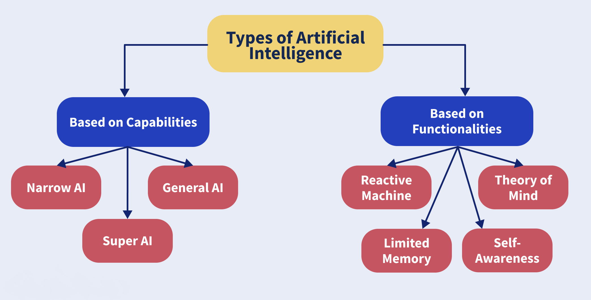

Qu’est ce que l’intelligence artificielle?
Définition
L’intelligence artificielle est une branche des computer-sciences qui consiste à créer des systèmes “intelligents” qui s’adonnent à des tâches qui demandent des processus mentaux semblables à ceux effectués par le cerveau humain tels que l’apprentissage perceptuel, l’organisation de la mémoire et le raisonnement critique.. Cela déclenche automatiquement dans nos têtes l’image d’une intelligence artificielle générale (définie un peu plus tard), mais c’est communément utilisé pour décrire une intelligence dite “étroite” (tout de même impressionnante) comme un programme jouant aux échecs ou bien qui détecte les fraudes de cartes de crédits. Jusqu’ici le machine learning a fait ses preuves et reste le moyen le plus utilisé pour développer une IA.
Selon le père de l'intelligence artificielle, John McCarthy, il s'agit de "la science et l'ingénierie de la fabrication de machines intelligentes, en particulier de programmes informatiques intelligents". L'IA est un programme informatique qui exécute quelque chose d'intelligent. Il peut s'agir d'un modèle statistique complexe ou d'une instruction "si-alors". Les instructions "si-alors" sont des règles simples programmées par les humains. Considérés ensemble, tous ces énoncés if-then sont parfois appelés moteurs de règles, systèmes experts, graphes de connaissances ou IA symbolique. Ce type d'IA est généralement appelé IA faible, qui ne peut effectuer qu'un certain nombre de tâches. En revanche, l'IA forte est une IA qui se comprend suffisamment bien pour s'améliorer d'elle-même. L'intelligence artificielle générale (AGI), qui a des capacités inter-domaines (comme les humains), peut apprendre d'un large éventail d'expériences (comme les humains).
Les types de l’intelligence artificielle
L'IA crée des systèmes imitant les capacités humaines. Bien que l'IA puisse être classée en différents types, les 2 catégories principales sont définies comme étant de type 1 et de type 2 et sont basées sur les capacités et les fonctionnalités de l'IA. Passons en revue les principales classifications des types d’IA.
Type 1: Capacités basées sur l'IA
Intelligence étroite (ANI) faible ou artificielle
Intelligence artificielle générale (AGI)
Super intelligence artificielle (ASI)
Une IA faible ou étroite est un type d'IA qui exécute des tâches assignées en utilisant l'intelligence. C’est la forme la plus courante d’IA disponible dans les industries d’aujourd’hui. L'IA étroite ne peut pas fonctionner au-delà de ce qui est assigné au système. En effet, il est formé pour effectuer une seule tâche spécifique.
ANI représente toutes les machines d'intelligence artificielle créées et déployées jusqu'à ce jour. Tous les systèmes artificiellement intelligents qui peuvent effectuer une tâche dédiée de manière autonome en utilisant des capacités semblables à celles d'un humain entrent dans cette catégorie. Comme son nom l'indique, ces machines ont des responsabilités très limitées.
Le Siri d’Apple, par exemple, est un exemple pour Narrow AI. Siri est formé pour exécuter un ensemble limité de fonctions prédéfinies. D'autres exemples incluent les voitures autonomes, les systèmes de reconnaissance d'images et de parole.
L'intelligence artificielle générale est un type d'IA capable d'exécuter toute tâche intellectuelle en tant qu'être humain. Les machines AGI sont conçues pour percevoir, apprendre et fonctionner entièrement comme des humains. En outre, l'objectif de la conception de systèmes AGI est de créer de multiples compétences qui peuvent réduire considérablement le temps nécessaire à la formation de ces machines.
En résumé, les systèmes AGI sont des machines capables de reproduire des capacités multifonctions humaines. Actuellement, des chercheurs du monde entier tentent de concevoir et de développer une telle intelligence artificielle. Comme il n’existe aucun exemple à ce jour, il s’appelle Général AI.
On peut décrire les systèmes super intelligents artificiels comme le zénith de la recherche sur l'IA. ASI est destiné non seulement à reproduire l'intelligence humaine à multiples facettes, mais également à disposer de capacités de mémoire, de traitement de données et d'analyse plus rapides.
Il s'agit d'un concept hypothétique d'intelligence artificielle dans lequel des chercheurs tentent de développer des machines capables de surpasser les humains. Ceci est le résultat du général AI.
Type 2: Fonctionnalités basées sur l'IA
L'IA réactive
- Deep Blue, le superordinateur d'IBM jouant aux échecs, a battu le champion du monde Garry Kasparov.
- Les filtres anti-spam pour nos courriels qui empêchent les promotions et les tentatives d'hameçonnage d'entrer dans nos boîtes de réception.
- Le moteur de recommandation de Netflix.
IA à mémoire limitée
Théorie des machines mentales
Machines à prise de conscience de soi
Le type le plus élémentaire d'intelligence artificielle est l'IA réactive, qui est programmée pour fournir un résultat prévisible en fonction des données qu'elle reçoit. Les machines réactives réagissent toujours de la même manière à des situations identiques, et elles ne sont pas capables d'apprendre des actions ou de concevoir le passé ou le futur. Parmi les exemples d'IA réactive, on peut citer :
L'IA réactive a constitué un énorme pas en avant dans l'histoire du développement de l'intelligence artificielle, mais ces types d'IA ne peuvent fonctionner au-delà des tâches pour lesquelles elles ont été initialement conçues. Cela les rend intrinsèquement limitées et mûres pour l'amélioration. Les scientifiques ont développé le type d'IA suivant à partir de cette base.
L'IA à mémoire limitée apprend du passé et construit des connaissances expérientielles en observant des actions ou des données. Ce type d'IA utilise des données historiques et d'observation en combinaison avec des informations préprogrammées pour faire des prédictions et effectuer des tâches de classification complexes. C'est le type d'IA le plus utilisé aujourd'hui.
Par exemple, les véhicules autonomes utilisent une IA à mémoire limitée pour observer la vitesse et la direction des autres voitures, ce qui les aide à "lire la route" et à s'adapter si nécessaire. Ce processus de compréhension et d'interprétation des données entrantes les rend plus sûrs sur les routes.
Cependant, l'IA à mémoire limitée - comme son nom l'indique - est encore limitée. Les informations avec lesquelles les véhicules autonomes travaillent sont fugaces et ne sont pas enregistrées dans la mémoire à long terme de la voiture.
Vous voulez tenir une conversation sérieuse avec un robot émotionnellement intelligent qui ressemble à un véritable être humain ? C'est ce qui se profile à l'horizon avec l'IA de la théorie de l'esprit.
Avec ce type d'IA, les machines acquerront de véritables capacités de prise de décision, similaires à celles des humains. Les machines dotées de l'IA de la théorie de l'esprit seront capables de comprendre et de mémoriser les émotions, puis d'adapter leur comportement en fonction de ces émotions lorsqu'elles interagissent avec les gens.
La réalisation de l'IA de la théorie de l'esprit se heurte encore à un certain nombre d'obstacles, car le processus de modification du comportement en fonction de l'évolution rapide des émotions est très fluide dans la communication humaine. Il est difficile de l'imiter alors que nous essayons de créer des machines de plus en plus intelligentes sur le plan émotionnel.
Cela dit, nous faisons des progrès. La tête de robot Kismet, développée par le professeur Cynthia Breazeal, peut reconnaître les signaux émotionnels sur les visages humains et reproduire ces émotions sur son propre visage. Le robot humanoïde Sophia, développé par Hanson Robotics à Hong Kong, peut reconnaître les visages et répondre aux interactions par ses propres expressions faciales.
Exemples :
Kismet est une tête de robot créée à la fin des années 90 par un chercheur du Massachusetts Institute of Technology (MIT). Kismet peut imiter et reconnaître les émotions humaines. Bien qu'il soit considéré comme une avancée majeure dans le domaine de l'IA de la théorie de l'esprit, Kismet ne peut pas suivre les regards ou transmettre l'attention des humains.
Le type d'intelligence artificielle le plus avancé est l'IA consciente d'elle-même. Lorsque les machines pourront être conscientes de leurs propres émotions, ainsi que de celles des personnes qui les entourent, elles auront un niveau de conscience et d'intelligence similaire à celui des êtres humains. Ce type d'IA aura également des désirs, des besoins et des émotions.
Les machines dotées de ce type d'IA seront conscientes de leurs émotions internes et de leurs états mentaux. Elles seront capables de faire des déductions (comme "je suis en colère parce que quelqu'un m'a coupé la route") qui ne sont pas possibles avec les autres types d'IA.
Nous n'avons pas encore développé ce type d'IA sophistiquée et nous ne disposons pas du matériel ou des algorithmes nécessaires.
Quelles sont les 5 matières associées à l'intelligence artificielle ?
- la neurobiologie computationnelle (particulièrement aux réseaux neuronaux)
- la logique mathématique (partie des mathématiques et de la philosophie). Elle utilise des méthodes de résolution de problèmes à forte complexité logique ou algorithmique. Par extension, elle comprend, dans le langage courant, les dispositifs imitant ou remplaçant l'homme dans certaines mises en œuvre de ses fonctions
- mathématique et l'algèbre linéaire
- probabilités et statistiques
- l’algorithmique et la programmation
Souvent classée dans le groupe des mathématiques et des sciences cognitives, elle fait appel à :